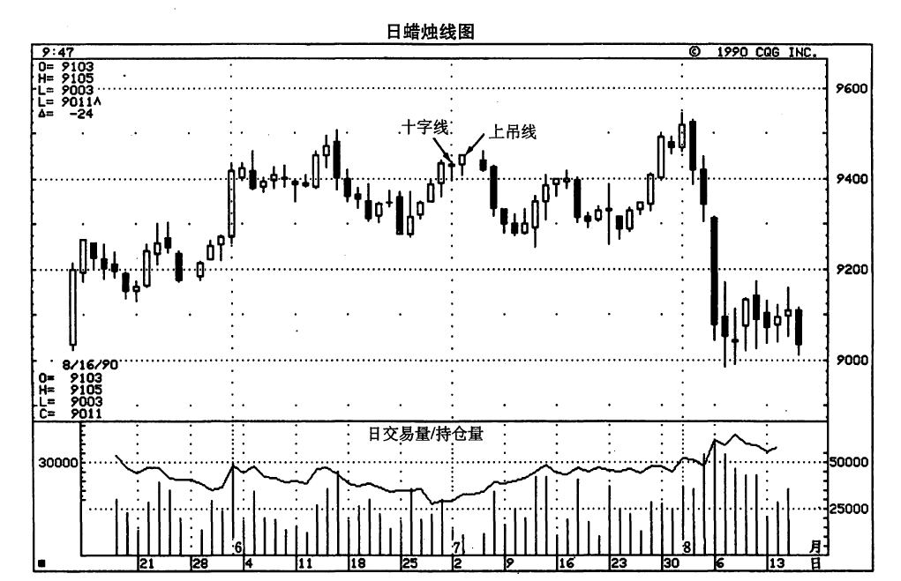
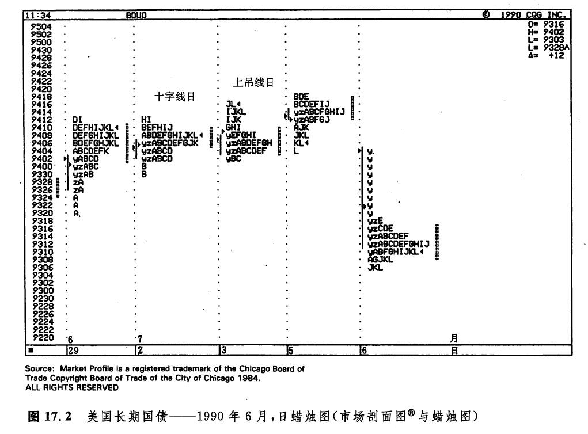
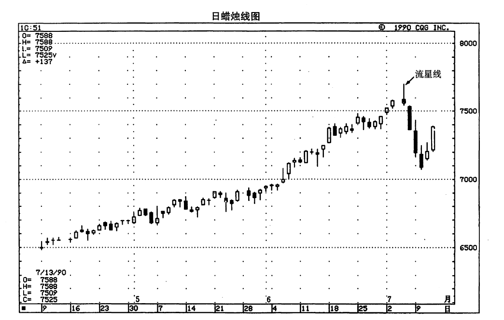

市场剖面图与蜡烛图
如图17.2所示，7月2日是一根十字线，下一天是一根上吊线，这是蜡烛图的顶部警告信号。那么，在同一期间，市场剖面图发出了什么样的信号呢？7月2日的剖面图同前一天相比，具有较小的价值区。而且，这一天的交易量也比较轻（当天的交易量为32000张合约，而前一天为303000张合约）。这一情形暗示，这里的价格水平过高，难以为市场所接受。换个说法，这样的价格水平对交易活动缺乏促进作用。另一方面，这一天的剖面图在上下两个方向均发生了区间扩展。这就显示出牛方和熊方的拔坷赛正僵持不下。


7月3日也是一个交易量较轻的交易日（109000张合约）。这就给当日市场种种坚挺的表现打了很大的折扣一一这一天，不仅发生了向上的区间扩展，而且收市价位于全日的最高点。下一天，即7月5日，市场的疲弱性质表露无遗。在当日较早的交易时间中，市场曾经为当前趋势创出了新高。在这个过程中，也形成了向上的区间扩展。市场通过这一区间扩展过程，试图吸引卖出者入市。结果，他们果然来了。在当日较晚的几个时段中（J、K、L时段），市场上形成了一段抛售行情，使得收市价接近全日的最低点。7月6日，当市场开市时就出现了发起性卖出，因为当日的开市价处在前一日的价值区之下。这就表明，当日的抛售活动自开市即刻开始。另一方面，7月6日的交易量呈现出增长的态势，并且在“y”时段内，形成了发起性卖出极端点（也就是说，位于当日剖面图顶部的单个的TPO）。这就证实当前市场已经陷入困境。
通过本实例，我们也能够看出上吊线的一个重要方面，有关内容我们过去有过介绍。仅在上吊线之后出现了看跌验证信号的条件下，上吊线才真正构成一个看跌信号。7月3日，是一根上吊钱。从这一天的市场剖面图来看，它甚至还为市场发出了一些正面的信号。只有通过之后的几个交易日，即7月5日和7月6日，特别是7月6日的早晨，我们才从市场剖面图上得到了这个市场顶部的确认信号。
如图17.3所示，7月5日是一根赫然醒目的流星线。在这根蜡烛线出现后，本图所示的棉花市场连续狂跌了三个交易日。那么，在这根流星线出现之前，市场剖面图是否发出了什么明显的不良征兆呢？是的，的确如此。从6月29日到7月3日，虽然价格一路上涨，但是价值区却一路收窄。这就意味在当前的较高价位上，市场对交易活动的便利、促进作用有所减弱。市场在将这些高的价格水平接受为价值的过程中，遇上了困难。另一方面，如果我们统计每一天的TPO总数，以此衡量当日的交易量的话，那么，这几天的交易量也呈现出日益下降的态势（这些交易日的真实交易量也是小的。无论如何，因为交易量的数据要迟一天才公布，所以我们需要统计TPO的总数，以估算当日的交易量）。请注意，7月5日的流星线标志着一个市场顶部。在当日的市场剖面图上，价值区接近当日价格范围的上端，但是未能招保跟进买入者。相反，由于受到这些高价位的吸引，卖出者纷纷入市，驱使市场下跌。结果，形成了图示的向下的区间扩展，以及一个疲软的收市价。这些情况构成了看跌的信号。


如果您觉得还需要更多的证据才能说明问题，那么，只要等到7月6日一开市，就真相大白了。在这一天开市时，市场在前一日的价值区之下形成了发起性卖出极端点。这就证实卖出者已经登台，市场前景堪忧。综上所述，通过市场剖面图的各种工具，图示流星线的看跌意义得到了验证。
在市场剖面图的思路与蜡烛图技术之间，存在着某些有趣的相似之处。如果市场剖面图的价值区较宽，则通常代表着市场对交易活动的促进，因此，这就增加了当前价格趋势持续发展的可能性。由此看来，在上升趋势中，我们期望看到逐步扩张的价值区。与此相似的是，在蜡烛图上，我们希望在上涨行情中看到一系列越来越长的白色实体，以证实当前价格运动背后的市场力量。
如果市场剖面图的价值区呈现出逐步收窄的局面，则反映了市场对交易活动的促进作用的减小。因此，判断当前价格运动能否持续发展，就少了几分把握。在蜡烛图的前方受阻形态和停顿形态中，情况与上述也是一样的。在这两种蜡烛图形态中，虽然价格趋势依然是上升的，但是在此过程中，白色实体的高度却在逐步缩小。这两类形态显示，当前的市场动力正在逐步衰减。
至于蜡烛图的星线，情况又怎么样呢？这是出现在上升趋势或下降趋势中的一种短实体的蜡烛线。它的出现，标志着牛方（上升趋势中的星线）斗志的消退，或者熊方（下降趋势中的星线）动力的减弱。在市场剖面图上，如果在一轮强烈的上涨行情（或下跌行情）之后，出现了一个小价值区，则说明了与上述相同的道理。这里的小价值区反映出市场对交易活动缺乏促进作用。这种情况可能是趋势即将生变的先兆。再看蜡烛图的锤子线。在剖面图上，由于低价位吸引了大量的买入者，从而产生了买入极端点，这种情况反应在蜡烛图上，可能就形成了一根锤子线长长的下影线。流星线呢？由于高价位吸引了强烈的抛售行为，造成了卖出极端点，这种情况反映在蜡烛图上，可能构成某个流星线长长的上影线。
下一篇：第十八章 蜡烛图与期权交易
上一篇：第十七章 蜡烛图与市场剖面图
copyright @ 2018 制作：汉钛电线，Hingtak Wire & Cable LLC